Last updated: 2018-11-15
workflowr checks: (Click a bullet for more information) ✖ R Markdown file: uncommitted changes
The R Markdown is untracked by Git. To know which version of the R Markdown file created these results, you’ll want to first commit it to the Git repo. If you’re still working on the analysis, you can ignore this warning. When you’re finished, you can run wflow_publish to commit the R Markdown file and build the HTML.
✔ Environment: empty
Great job! The global environment was empty. Objects defined in the global environment can affect the analysis in your R Markdown file in unknown ways. For reproduciblity it’s best to always run the code in an empty environment.
✔ Seed:
set.seed(20181007)
The command set.seed(20181007) was run prior to running the code in the R Markdown file. Setting a seed ensures that any results that rely on randomness, e.g. subsampling or permutations, are reproducible.
✔ Session information: recorded
Great job! Recording the operating system, R version, and package versions is critical for reproducibility.
✔ Repository version: 02c65b7
wflow_publish or wflow_git_commit). workflowr only checks the R Markdown file, but you know if there are other scripts or data files that it depends on. Below is the status of the Git repository when the results were generated:
Ignored files:
Ignored: .DS_Store
Ignored: .Rhistory
Ignored: .Rproj.user/
Ignored: data/.DS_Store
Untracked files:
Untracked: analysis/hw3.Rmd
Untracked: assignment/assignment3.pdf
Untracked: code/hw3.Rmd
Untracked: code/hw3.log
Untracked: code/hw3.tex
Untracked: data/assn3-prob5-wangzh.txt
Untracked: data/assn3-wangzh.txt
Untracked: data/hw3/
Untracked: docs/figure/hw3.Rmd/
rm(list=ls())
set.seed(12345)
options(warn = -1)
knitr::opts_knit$set(root.dir = '~/Desktop/stat374-fall-2018/analysis/')
suppressMessages(library(kedd))
suppressMessages(library(fields))
suppressMessages(library("tidyverse"))# crime = read.csv("../data/hw3/Crimes_-_Map.csv")
# crime_loc = crime[,c("LATITUDE","LONGITUDE")]
# saveRDS(crime_loc, "../data/hw3/crime_loc.rds")
crime_loc = readRDS("../data/hw3/crime_loc.rds")
## remove samples with NA
crime_loc = na.omit(crime_loc)set.seed(12345)
## take a small sample of data to select the right bandwidth
crime_loc.sub=crime_loc[sample(1:nrow(crime_loc),1000),]
lat.sub= crime_loc.sub$LATITUDE
long.sub = crime_loc.sub$LONGITUDE
## Broad search for longtitude
ucv_long = h.ucv(long.sub,lower = 0, upper = 0.05, tol = 0.0001)
plot(ucv_long, main = "bandwidth vs ucv for long")$kernel
[1] "gaussian"
$deriv.order
[1] 0
$seq.bws
[1] 0.002451702 0.003068797 0.003685892 0.004302987 0.004920082
[6] 0.005537177 0.006154272 0.006771367 0.007388462 0.008005557
[11] 0.008622652 0.009239747 0.009856842 0.010473937 0.011091032
[16] 0.011708127 0.012325222 0.012942317 0.013559412 0.014176507
[21] 0.014793602 0.015410697 0.016027792 0.016644887 0.017261982
[26] 0.017879077 0.018496172 0.019113267 0.019730362 0.020347457
[31] 0.020964552 0.021581647 0.022198742 0.022815837 0.023432932
[36] 0.024050027 0.024667122 0.025284217 0.025901312 0.026518407
[41] 0.027135502 0.027752597 0.028369692 0.028986787 0.029603882
[46] 0.030220977 0.030838072 0.031455167 0.032072262 0.032689357
$ucv
[1] -5.293609 -5.278013 -5.263121 -5.248248 -5.232179 -5.214967 -5.197465
[8] -5.180562 -5.164809 -5.150390 -5.137234 -5.125151 -5.113923 -5.103355
[15] -5.093290 -5.083613 -5.074237 -5.065101 -5.056158 -5.047372 -5.038718
[22] -5.030175 -5.021727 -5.013364 -5.005081 -4.996872 -4.988738 -4.980681
[29] -4.972701 -4.964805 -4.956995 -4.949276 -4.941652 -4.934127 -4.926703
[36] -4.919383 -4.912166 -4.905052 -4.898040 -4.891127 -4.884310 -4.877584
[43] -4.870943 -4.864380 -4.857889 -4.851462 -4.845090 -4.838765 -4.832478
[50] -4.826220# ## fine search (locate a neighborhood of the best point from broad search)
ucv_long = h.ucv(long.sub, lower = 0.7*ucv_long$h, higher = 1.3*ucv_long$h, tol = 0.0001)
plot(ucv_long, main = "bandwidth vs ucv for long")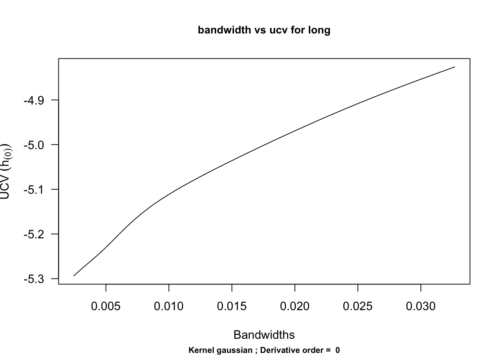
$kernel
[1] "gaussian"
$deriv.order
[1] 0
$seq.bws
[1] 0.002451702 0.003068797 0.003685892 0.004302987 0.004920082
[6] 0.005537177 0.006154272 0.006771367 0.007388462 0.008005557
[11] 0.008622652 0.009239747 0.009856842 0.010473937 0.011091032
[16] 0.011708127 0.012325222 0.012942317 0.013559412 0.014176507
[21] 0.014793602 0.015410697 0.016027792 0.016644887 0.017261982
[26] 0.017879077 0.018496172 0.019113267 0.019730362 0.020347457
[31] 0.020964552 0.021581647 0.022198742 0.022815837 0.023432932
[36] 0.024050027 0.024667122 0.025284217 0.025901312 0.026518407
[41] 0.027135502 0.027752597 0.028369692 0.028986787 0.029603882
[46] 0.030220977 0.030838072 0.031455167 0.032072262 0.032689357
$ucv
[1] -5.293609 -5.278013 -5.263121 -5.248248 -5.232179 -5.214967 -5.197465
[8] -5.180562 -5.164809 -5.150390 -5.137234 -5.125151 -5.113923 -5.103355
[15] -5.093290 -5.083613 -5.074237 -5.065101 -5.056158 -5.047372 -5.038718
[22] -5.030175 -5.021727 -5.013364 -5.005081 -4.996872 -4.988738 -4.980681
[29] -4.972701 -4.964805 -4.956995 -4.949276 -4.941652 -4.934127 -4.926703
[36] -4.919383 -4.912166 -4.905052 -4.898040 -4.891127 -4.884310 -4.877584
[43] -4.870943 -4.864380 -4.857889 -4.851462 -4.845090 -4.838765 -4.832478
[50] -4.826220## Broad search for latitude
ucv_lat = h.ucv(lat.sub,lower = 0, upper = 0.05,tol = 0.0001)
plot(ucv_lat, main = "bandwidth vs ucv for lat")$kernel
[1] "gaussian"
$deriv.order
[1] 0
$seq.bws
[1] 0.003654683 0.004574569 0.005494455 0.006414341 0.007334227
[6] 0.008254114 0.009174000 0.010093886 0.011013772 0.011933658
[11] 0.012853544 0.013773431 0.014693317 0.015613203 0.016533089
[16] 0.017452975 0.018372861 0.019292747 0.020212634 0.021132520
[21] 0.022052406 0.022972292 0.023892178 0.024812064 0.025731951
[26] 0.026651837 0.027571723 0.028491609 0.029411495 0.030331381
[31] 0.031251267 0.032171154 0.033091040 0.034010926 0.034930812
[36] 0.035850698 0.036770584 0.037690471 0.038610357 0.039530243
[41] 0.040450129 0.041370015 0.042289901 0.043209788 0.044129674
[46] 0.045049560 0.045969446 0.046889332 0.047809218 0.048729104
$ucv
[1] -3.829667 -3.817585 -3.805652 -3.796917 -3.790954 -3.786334 -3.781991
[8] -3.777383 -3.772259 -3.766479 -3.759940 -3.752559 -3.744284 -3.735092
[15] -3.724991 -3.714016 -3.702219 -3.689666 -3.676431 -3.662588 -3.648216
[22] -3.633391 -3.618188 -3.602679 -3.586936 -3.571024 -3.555008 -3.538949
[29] -3.522903 -3.506922 -3.491057 -3.475351 -3.459845 -3.444573 -3.429568
[36] -3.414855 -3.400456 -3.386390 -3.372670 -3.359306 -3.346305 -3.333669
[43] -3.321400 -3.309495 -3.297949 -3.286755 -3.275906 -3.265392 -3.255201
[50] -3.245323# ## fine search (locate a neighborhood of the best point from broad search)
ucv_lat = h.ucv(lat.sub, lower = 0.7*ucv_lat$h, higher = 1.3*ucv_lat$h, tol = 0.0001)
plot(ucv_lat, main = "bandwidth vs ucv for lat")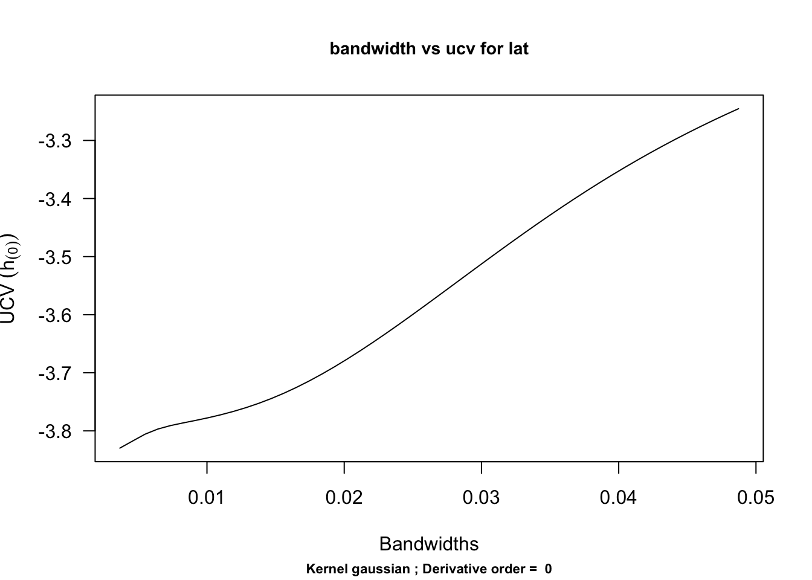
$kernel
[1] "gaussian"
$deriv.order
[1] 0
$seq.bws
[1] 0.003654683 0.004574569 0.005494455 0.006414341 0.007334227
[6] 0.008254114 0.009174000 0.010093886 0.011013772 0.011933658
[11] 0.012853544 0.013773431 0.014693317 0.015613203 0.016533089
[16] 0.017452975 0.018372861 0.019292747 0.020212634 0.021132520
[21] 0.022052406 0.022972292 0.023892178 0.024812064 0.025731951
[26] 0.026651837 0.027571723 0.028491609 0.029411495 0.030331381
[31] 0.031251267 0.032171154 0.033091040 0.034010926 0.034930812
[36] 0.035850698 0.036770584 0.037690471 0.038610357 0.039530243
[41] 0.040450129 0.041370015 0.042289901 0.043209788 0.044129674
[46] 0.045049560 0.045969446 0.046889332 0.047809218 0.048729104
$ucv
[1] -3.829667 -3.817585 -3.805652 -3.796917 -3.790954 -3.786334 -3.781991
[8] -3.777383 -3.772259 -3.766479 -3.759940 -3.752559 -3.744284 -3.735092
[15] -3.724991 -3.714016 -3.702219 -3.689666 -3.676431 -3.662588 -3.648216
[22] -3.633391 -3.618188 -3.602679 -3.586936 -3.571024 -3.555008 -3.538949
[29] -3.522903 -3.506922 -3.491057 -3.475351 -3.459845 -3.444573 -3.429568
[36] -3.414855 -3.400456 -3.386390 -3.372670 -3.359306 -3.346305 -3.333669
[43] -3.321400 -3.309495 -3.297949 -3.286755 -3.275906 -3.265392 -3.255201
[50] -3.245323plot(density(crime_loc$LONGITUDE,bw=ucv_long$h),main="Longitude Density Plot")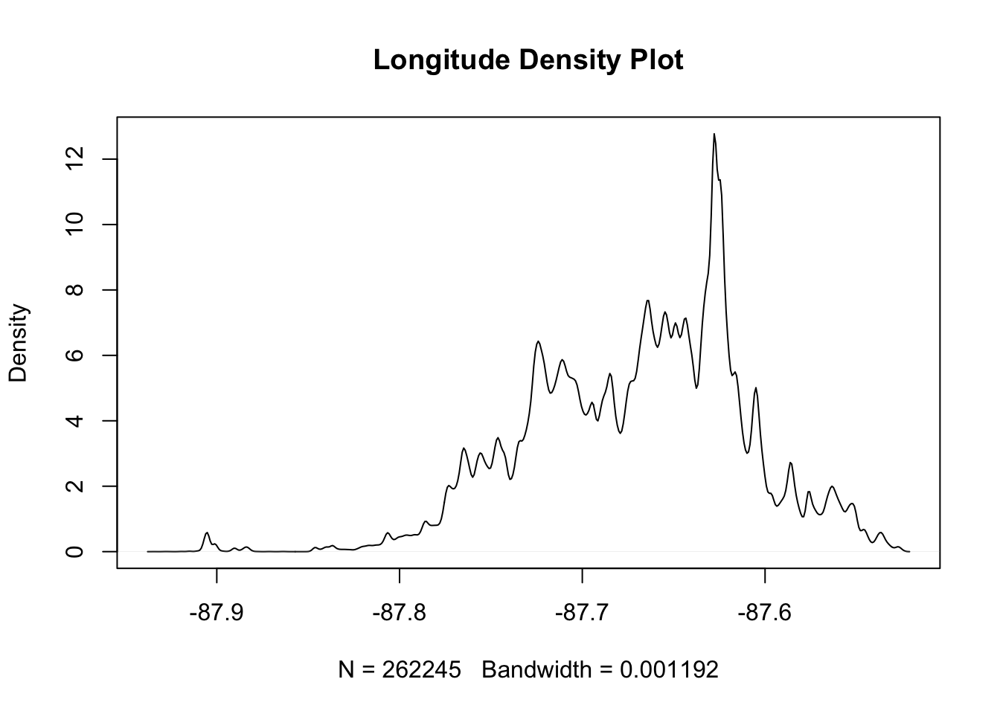
plot(density(crime_loc$LATITUDE,bw=ucv_lat$h),main="Latitude Density Plot")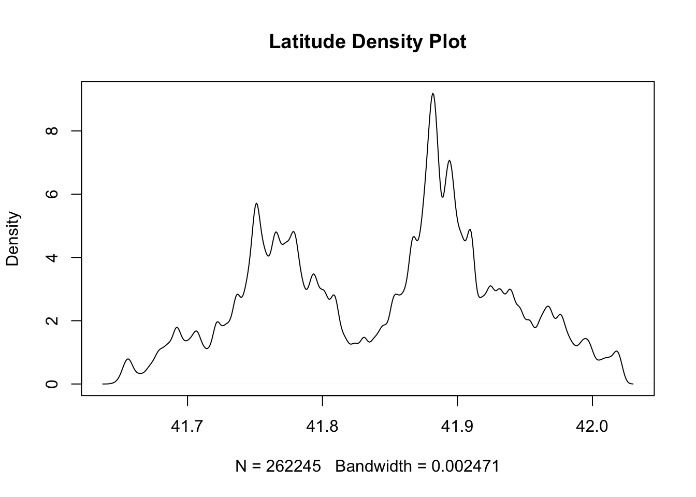
suppressMessages(library(MASS))
## the amount of smoothing is chosen by default
est_density = kde2d(crime_loc$LONGITUDE, crime_loc$LATITUDE, n = 100)
image.plot(est_density, col = rainbow(1000))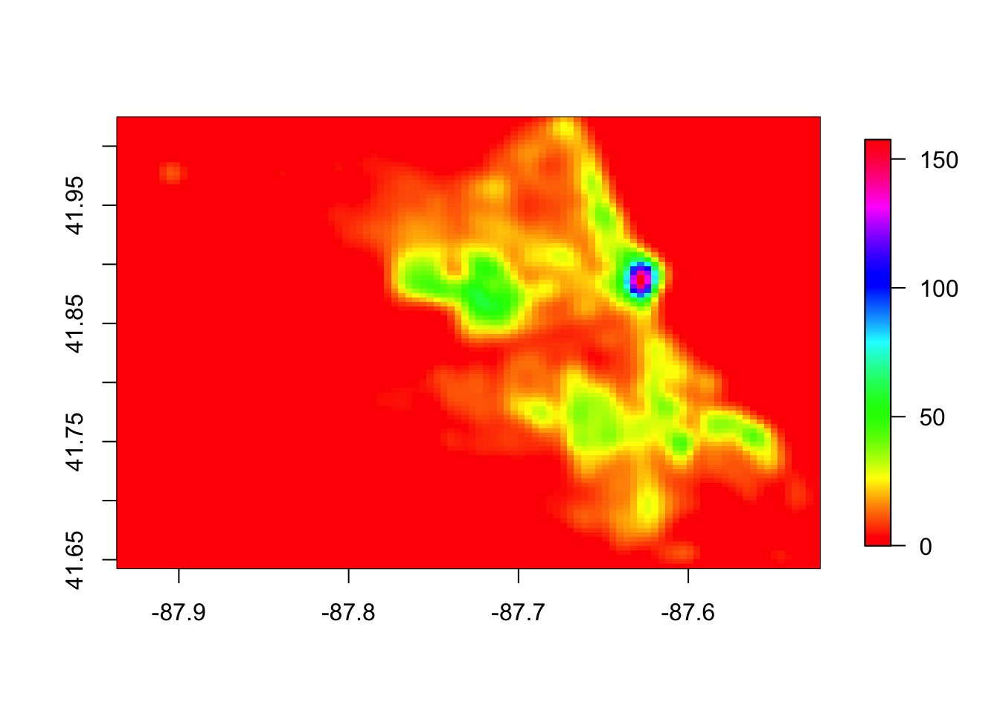
First, compute \(\hat{\theta}_{\lambda}\):\ Since our objective function is: \[ f(\beta) := (\vec{x} - \vec{\beta})^T (\vec{x} - \vec{\beta}) + \lambda \beta ^T \beta \]. We can compute its first and second order derivative: \[ \begin{equation*} \begin{aligned} & \nabla f(\beta) = 2((\lambda+1)\vec{\beta} - \vec{x})\\ & \nabla^2f(\beta) = 2(\lambda+1) > 0 \end{aligned} \end{equation*} \] Therefore, we let \(\nabla f(\beta) = 0\) and get \(\vec{\hat{\theta}_\lambda} = \frac{1}{\lambda + 1} \vec{x}\). Then we can decompose the Risk: \[R(\hat{\theta}_\lambda, \theta) = |E(\vec{\hat{\theta}_\lambda}) - \vec{\theta}|^2 + E(|\vec{\hat{\theta}_\lambda} - E(\vec{\hat{\theta}_\lambda})|^2) = (\frac{\lambda}{1+\lambda})^2 |\vec{\theta}|^2 + \frac{n \sigma_n^2}{(\lambda+1)^2} = A (\frac{\lambda}{1+\lambda})^2 + B(\frac{1}{1+\lambda})^2 \] where \(A := |\vec{\theta}|^2, B:= n\sigma_n^2\).
\[ R(\hat{\theta}_\lambda, \theta) = A (\frac{\lambda}{1+\lambda})^2 + B(\frac{1}{1+\lambda})^2 = \frac{A+B}{(\lambda+1)^2} - \frac{2A}{\lambda+1} + A\] Thus, we have \[ \frac{1}{1+\lambda_*} = \frac{A}{A+B}; \lambda_* = \frac{B}{A} = \frac{n\sigma_n^2}{|\vec{\theta}|^2}\] as the minimizer of the risk.
\[ \begin{equation*} \begin{aligned} \hat{R}(\hat{\theta}_\lambda, \theta) & = n\sigma_n^2 + 2\sigma_n^2 div(g(\vec{x})) + |g(\vec{x})|^2 \\ & = n\sigma_n^2 - 2\sigma_n^2 n (\frac{\lambda}{1+\lambda}) + (\frac{\lambda}{1+\lambda})^2|\vec{x}|^2\\ & = B - 2Bu + A'u^2 \ (\text{we let } A' := |\vec{x}|^2, B := n\sigma_n^2, u:= \frac{\lambda}{1+\lambda}) \end{aligned} \end{equation*} \] Thus the minimizer of the equation is \(\frac{\lambda^*}{1+\lambda^*} = u^* = \frac{B}{A'}\). Thus \(\lambda^* = \frac{B}{A'-B} = \frac{n\sigma_n^2}{|\vec{x}|^2 -n\sigma_n^2 }\) is the minimizer of SURE.
The answer is yes.
From (b), we can get the minimax bound as \(sup_{\vec{\theta} \in \Theta(c)} R(\hat{\theta}_{\lambda_*},\theta) = sup_{A \leq c^2} \frac{AB}{A+B} = \frac{B}{1+B/A} \leq \frac{B}{1+\frac{B}{C}}\) by easy calculation.
Then we know \(|\vec{x}|^2 - n\sigma_n^2 \rightarrow |\vec{\theta}|^2\) asymptotically. Thus \(\hat{R}(\hat{\theta}_\lambda^*, \theta) \rightarrow (\frac{B}{A+B})^2A + (1-\frac{B}{A+B})^2B = \frac{AB}{A+B} \leq \frac{B}{1+\frac{B}{C}}\). Thus the claim follows.
\(\hat{\theta}^{TS,v} - v\) is the James-Stein estimator for \(\theta - v\). Thus, by Thm 7.4.2 (AoNS), we have \[ R(\hat{\theta}^{TS,v},\theta) = R(\hat{\theta}^{TS,v}-v, \theta - v) = n\sigma^2 - (n-2)^2 \sigma^4E(\frac{1}{||Z-v||^2}) \leq n\sigma^2 \] Then to the minimizer of risk is the maximizer of \(E(\frac{1}{||z-v||^2})\). We know from the proof in Thm 7.4.2 that \(||Z-v||^2 \sim \sigma^2 W\). When \(||Z-v||^2 \neq 0\), \(W\) is a noncentral \(\chi^2\) with n degrees of freedom and noncentrality parameter \(\delta = ||\theta||^2/\sigma^2\). Then \(W \sim \chi^{2}_{n+2K}\), with \(K \sim Poisson(\delta/2)\).Thus \[ \begin{aligned} \mathbb { E } _ { \theta } \left[ \frac { 1 } { \sum _ { i } Z _ { i } ^ { 2 } } \right] & = \left( \frac { 1 } { \sigma _ { n } ^ { 2 } } \right) \mathbb { E } \left[ \frac { 1 } { \chi _ { n + 2 K } ^ { 2 } } \right] = \left( \frac { 1 } { \sigma _ { n } ^ { 2 } } \right) \mathbb { E } \left( E \left[ \frac { 1 } { \chi _ { n + 2 K } ^ { 2 } } | K \right] \right) \\ & = \left( \frac { 1 } { \sigma _ { n } ^ { 2 } } \right) \mathbb { E } \left[ \frac { 1 } { n - 2 + 2 K } \right]\\ & \leq \frac { 1 } { \sigma _ { n } ^ { 2 } } \frac { 1 } { n - 2 } \end{aligned} \] But when $ ||Z-v|| = 0$, we have \(W \sim \chi^2_{n}\). Then \(\mathbb { E } _ { \theta } \left[ \frac { 1 } { \sum _ { i } Z _ { i } ^ { 2 } } \right] = \frac { 1 } { \sigma _ { n } ^ { 2 } } \frac { 1 } { n - 2 }\), Thus we can clearly see the risk is minimized with \(v = \theta\).
\[ R(\hat{\theta}^{a,b},\theta) = E(aZ+b-\theta)^2 = a^2\theta^2 + ((a-1)\theta+b)^2\] * when \(a = 0\), it is admissable. If not, suppose we have find
\(\tilde{\theta}\) s.t \(E(|\tilde{\theta}-\theta|^2) \leq R(\hat{\theta}^{a,b},\theta) = (b-\theta)^2, \forall \theta\). Let \(\theta = b\), then we have \(\tilde{\theta} \equiv b\) just itself. Then the inequality will never hold for any \(\theta\). Thus contradictory.
* when \(a < 0\)
Not admissable. We can choose \(\tilde{\theta} = \frac{b}{1-a}\). Then \(R(\hat{\theta}^{a,b},\theta) > (\theta-\frac{b}{1-a})^2 = R(\tilde{\theta},\theta) \ \forall \theta\)
* when \(a>1\)
Not admissable. We can choose \(\tilde{\theta} = Z\), then \(R(\hat{\theta}^{a,b},\theta) > \sigma^2 = R(\tilde{\theta},\theta) \ \forall \theta\)
* when \(a=1, b\neq 0\)
Not admissable. We can choose \(\tilde{\theta} = Z\), then \(R(\hat{\theta}^{a,b},\theta) = \sigma^2 + b^2 > \sigma^2 = R(\tilde{\theta},\theta) \ \forall \theta\)
is not admissable, as \(R(\hat{\theta},\theta) = n\sigma^2 > R(\hat{\theta}^{JS,v}, \theta)\)
* \(\hat{\theta}^{JS,v}\) is not admissable.
First observe that the modified JS estimator has smaller risk than the original JS estimator, since the negative shrinkage coefficient will cause bigger risk than coefficient that is 0.
Then define \[\widehat{\theta}^{JS,v}_+ = v + \left(1 -\frac{(n - 2) \sigma^{2}} {\sum_{i = 1}^{n} \left(Z_{i}-v_{i} \right) ^{ 2 }} \right)_+ (Z - v)\]
Then $R(^{JS,v},) = R(^{JS,v} -v, -v) < R(^{JS,v}+ -v, -v) = R(^{JS, v}+, ) $. Thus not admissiable.
train = read.csv("../data/hw3/baseball_train.txt", sep = "", header = FALSE)
m = 45
Y = as.numeric(train)
suppressMessages(library(base))
Z = sqrt(m)*asin(2*Y-1)
n = length(Z)
## normal means estimates
mle = Z
bhat = 1-(n-2)/sum(Z^2)
js = bhat*Z
v = replicate(n,mean(Z))
bhat_v = 1-(n-2)/sum((Z-v)^2)
js_v = bhat_v*(Z-v) + v
## compare with the "truth"
test = read.csv("../data/hw3/baseball_test.txt",sep = "", header = FALSE)
p = as.numeric(test)
theta = sqrt(m)*asin(2*p-1)
print(paste0("mse for mle: ", sqrt(mean((theta-mle)^2))))[1] "mse for mle: 0.988201780557244"print(paste0("mse for js: ", sqrt(mean((theta-js)^2))))[1] "mse for js: 0.950822482599612"print(paste0("mse for js with v: ", sqrt(mean((theta-js_v)^2))))[1] "mse for js with v: 0.527316923239491"In this case, the standard JS estimator does not get too much improvement. But the generalized JS with v to be the mean of all the data get a good result.
Estimating the proportion combined with betting averages is going to get a smaller risk.
From Wikipedia page Stein’s paradox, we know “when three or more parameters are estimated simultaneously, there exist combined estimators more accurate on average (that is, having lower expected mean squared error) than any method that handles the parameters separately”. Therefore such multitask learning is going to help us get better results.
The risk is \(\sum_{i} E(bZ_i-\theta_i)^2 = nb^2 + (b-1)^2 ||\theta||^2\). Let \(A := ||\theta||^2\), we have \(Risk = (A+n)b^2 - 2Ab + A\), a quadratic function. The minimizer is obviously \(b_* = \frac{A}{A+n}\)
n = 1000
i = 1:n
theta = 1/i^2
z = rnorm(n,mean = theta,sd = replicate(n,1))
## mle
mle = z
## bstar
A = sum(theta^2)
risk0 <- function(b,a=A){
return((a+n)*b^2 - 2*a*b + a)
}
b = seq(0,0.002,0.0001)
rs0 = sapply(b,function(b) risk0(b))
plot(b,rs0, main = "risk vs b")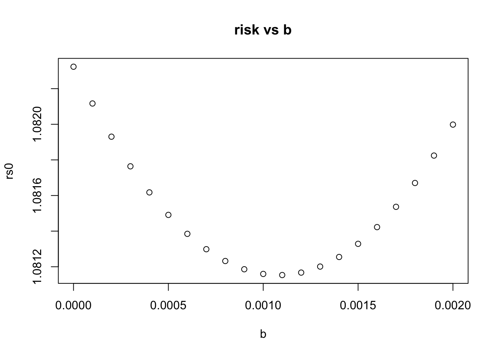
bstar = A/(A+n)
## get bhat from simulation
risk <- function(b,z,theta){
return(sum((theta-b*z)^2))
}
js_exper <- function(seed, theta){
set.seed(seed)
n = length(theta)
z = rnorm(n,mean = theta,sd = replicate(n,1))
bhat = max(0,1- (n/sum(z^2)))
return(bhat)
}
exper = 1:1000
Bhat = sapply(exper, function(seed) js_exper(seed, theta))
plot(exper, Bhat, main = "simulated bhat vs bstar")
abline(h = bstar, col = "red")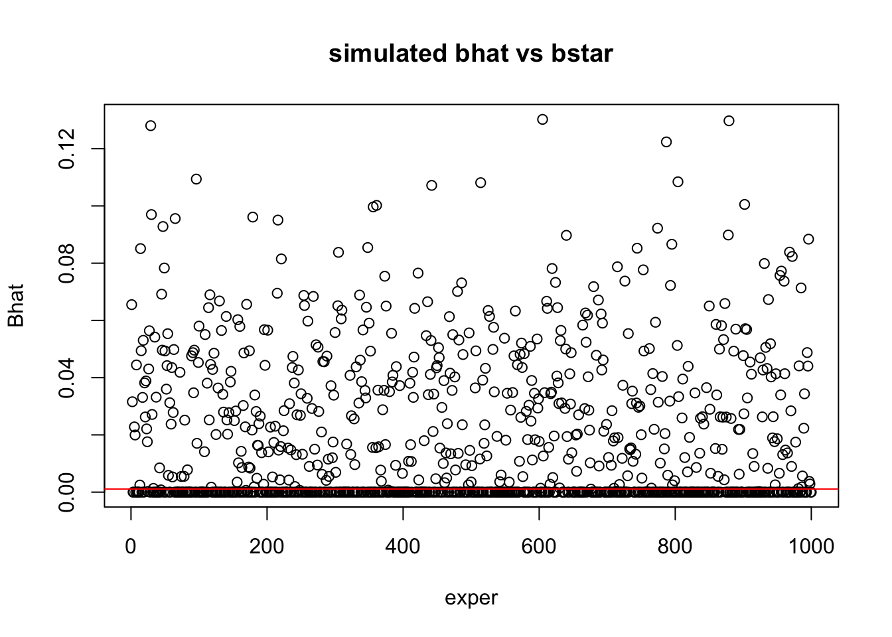
## compute risk
c = sum(theta^2)
r_B = sapply(Bhat, function(bhat) sum((theta-bhat*z)^2))
plot(exper, r_B,main = "risk of simulated js vs pinsker")
abline(h = c^2/(1+c^2), col = "red")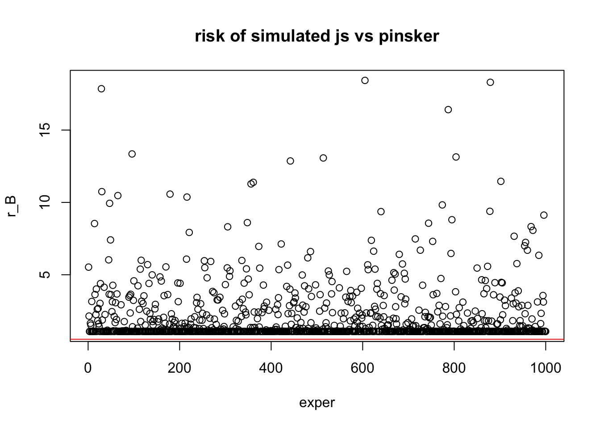
## finally, use the mean of the simulated bhat as bhat for comparison with MLE
bhat = mean(Bhat)
print(paste0("mle risk is: ", sum((theta-mle)^2)))[1] "mle risk is: 1012.50147856472"print(paste0("js risk is: ", sum((theta-bhat*z)^2)))[1] "js risk is: 1.43398520121747"print(paste0("pinsker bound when c= ",c," is ", c^2/(1+c^2) ))[1] "pinsker bound when c= 1.0823232333783 is 0.539472625923871"data_p5 = read.csv("../data/hw3/assn3-prob5-data.txt", header = FALSE)
x = data_p5$V1
plot(density(x))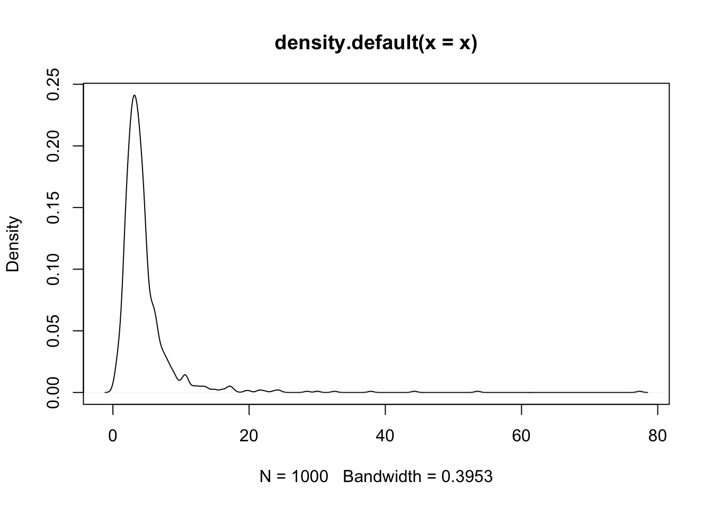
#lines(density(rpois(100,mean(x))), col = "red")#plot(1:length(x), sort(x, decreasing = TRUE))
## take the 25% ~ 75% data and
## divide them into smalls bins of length h
## get variance for each of the bins and then take the average
data_mid = sort(x, decreasing = TRUE)[(0.1*length(x)):(0.9*length(x))]
plot(1:length(data_mid), data_mid)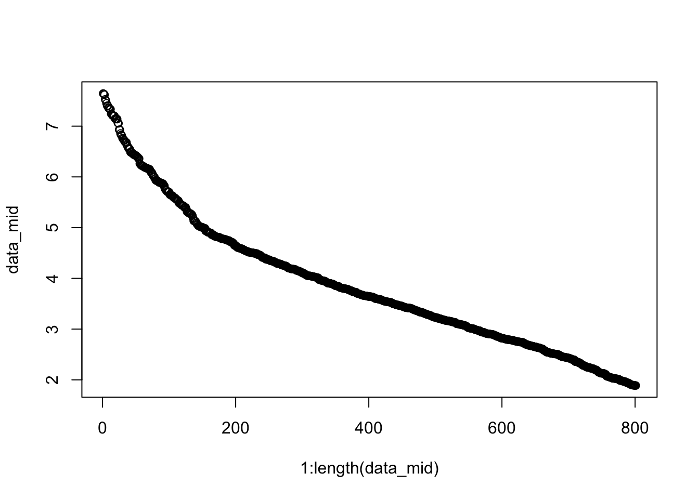
est_var <- function(h=10,step=3,data=data_mid){
n = length(data)
Sigma = vector()
#Diff = vector()
for(i in seq(1,n-h,step)){
z = data[i:(i+h)]
Sigma = c(Sigma, mean((z - mean(z))^2))
#Diff = (max(z) -min(z))/mean(z)
}
sigma = mean(Sigma)
#diff = mean(Diff)
return(sigma)
}sigma = est_var(50)
n = length(x)
theta_hat = max(0, 1-n*sigma^2/sum(x^2)) * x
plot(density(theta_hat), main = paste0("sigma ", format(sigma,4), " b ", max(0, 1-n*sigma^2/sum(x^2))))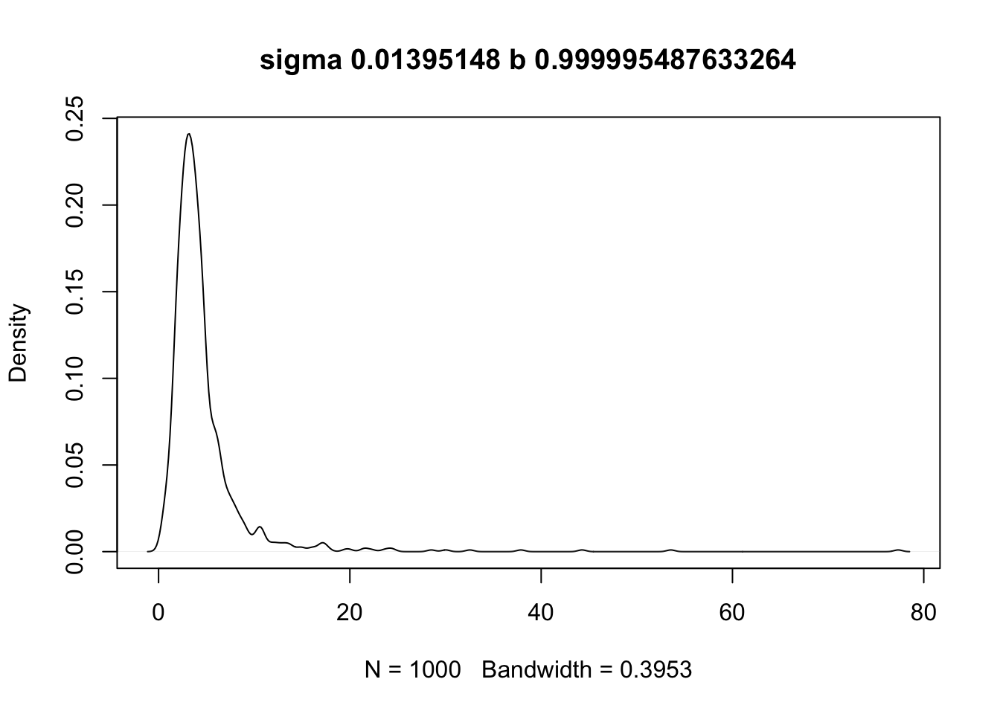
write.table(theta_hat, "../data/assn3-wangzh.txt", row.names = FALSE, col.names=FALSE, sep = "\n")Without any means of validation, this way of estimating variance is like pure guessing…
sessionInfo()R version 3.4.3 (2017-11-30)
Platform: x86_64-apple-darwin15.6.0 (64-bit)
Running under: macOS High Sierra 10.13
Matrix products: default
BLAS: /Library/Frameworks/R.framework/Versions/3.4/Resources/lib/libRblas.0.dylib
LAPACK: /Library/Frameworks/R.framework/Versions/3.4/Resources/lib/libRlapack.dylib
locale:
[1] en_US.UTF-8/en_US.UTF-8/en_US.UTF-8/C/en_US.UTF-8/en_US.UTF-8
attached base packages:
[1] grid stats graphics grDevices utils datasets methods
[8] base
other attached packages:
[1] MASS_7.3-50 forcats_0.3.0 stringr_1.3.1 dplyr_0.7.7
[5] purrr_0.2.5 readr_1.1.1 tidyr_0.8.1 tibble_1.4.2
[9] ggplot2_3.1.0 tidyverse_1.2.1 fields_9.6 maps_3.3.0
[13] spam_2.2-0 dotCall64_1.0-0 kedd_1.0.3
loaded via a namespace (and not attached):
[1] tidyselect_0.2.5 reshape2_1.4.3 haven_1.1.1
[4] lattice_0.20-35 colorspace_1.3-2 htmltools_0.3.6
[7] yaml_2.1.19 rlang_0.3.0.1 R.oo_1.22.0
[10] pillar_1.2.2 withr_2.1.2 foreign_0.8-70
[13] glue_1.3.0 R.utils_2.6.0 readxl_1.1.0
[16] modelr_0.1.2 bindrcpp_0.2.2 bindr_0.1.1
[19] plyr_1.8.4 cellranger_1.1.0 munsell_0.5.0
[22] gtable_0.2.0 workflowr_1.0.1 rvest_0.3.2
[25] R.methodsS3_1.7.1 psych_1.8.4 evaluate_0.10.1
[28] knitr_1.20 parallel_3.4.3 broom_0.4.4
[31] Rcpp_0.12.19 backports_1.1.2 scales_1.0.0
[34] jsonlite_1.5 mnormt_1.5-5 hms_0.4.2
[37] digest_0.6.18 stringi_1.2.2 rprojroot_1.3-2
[40] cli_1.0.0 tools_3.4.3 magrittr_1.5
[43] lazyeval_0.2.1 crayon_1.3.4 whisker_0.3-2
[46] pkgconfig_2.0.2 xml2_1.2.0 lubridate_1.7.4
[49] rstudioapi_0.7 assertthat_0.2.0 rmarkdown_1.9
[52] httr_1.3.1 R6_2.3.0 nlme_3.1-137
[55] git2r_0.21.0 compiler_3.4.3 This reproducible R Markdown analysis was created with workflowr 1.0.1
Comment: